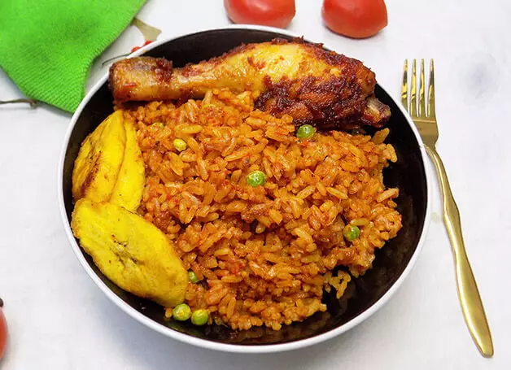
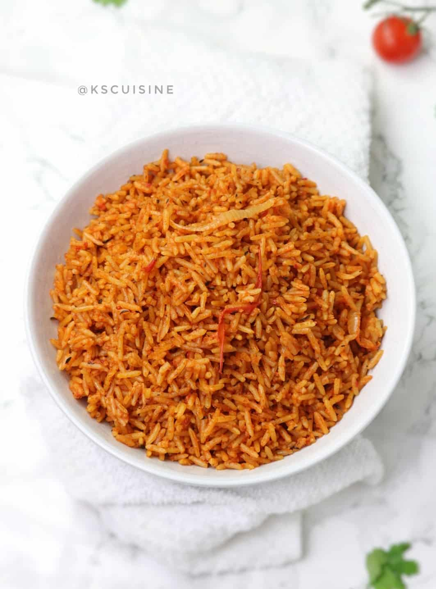
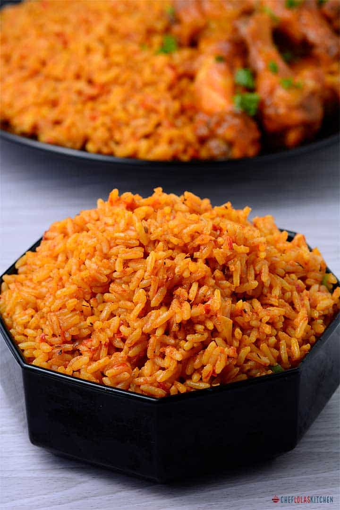
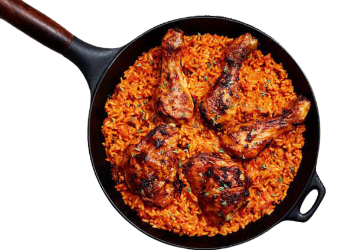

My favourite food is Jollof rice
Jollof rice, is a rice dish from West Africa. The dish is typically made with long-grain rice, tomatoes, onions, spices, vegetables and meat in a single pot, although its ingredients and preparation methods vary across different regions.Continue reading
| Ingredients | Measurement |
|---|---|
| Long grain rice | 4 cups |
| Big onion | 1 |
| Canned tomato paste | 1 |
| Red bell peppers (tatashe) | 4 |
| Scotch bonnet pepper ( Ata-rodo) | 2 |
| Tablespoons of cooking oil | 2 |
| Teaspoon of thyme | 1 |
| Teaspoon of curry powder | 1 |
| Seasoning cubes to taste | 1 |
| Seasoning cubes to taste | 6 |
| Meat or chicken | 1kg |
| Salt to taste | 1 spoon |
| Clove of garlic | 1 |
| Fingers of ginger | 2 |
| Ground nutmeg to taste | Pinch |
Instructions on how to prepare Jollof rice
- Heat the cooking oil in a large pan. When the oil is hot, add the diced onions and cook for about 3 to 5 minutes, or until the onions are soft.
- Next, add the tomato paste and fry for about 5 minutes. Then add the garlic, ginger, and bay leaves and let it cook in the tomato paste for about 2 minutes.
- Add the blended pepper and allow the pepper to cook until the water is reduced entirely and the oil is seen floating on the fried pepper—about 15 minutes.
- Season with thyme, curry powder, salt to taste, white pepper, and seasoning cubes. Cook for another 2 to 5 minutes.
- Stir the rice into the sauce until it is well coated. Then add the chicken stock, stir, and cover with a tight-fitting lid, and then bring to a boil over high heat.
- Once it begins to boil—after about 3 to 5 minutes, reduce the heat immediately to medium-low and steam until the rice is done—about 30 minutes.
- Add the butter, sliced tomato, and onions, stir together briefly and turn off the heat. Cover it immediately so that the heat remaining in the rice can steam up the vegetables a little.
- Serve with sweet fried plantains, roasted chicken, or salad.
Jollof rice images





